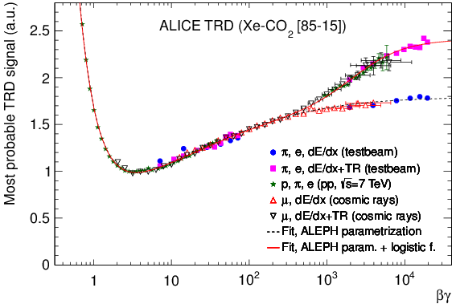

Transition Radiation from Cosmic Muons

This figure shows the signal of the Transition Radiation Detector (TRD) in the ALICE experiment at the LHC. The data are from various sources:
References
[1] R. Bailhache et al. [ALICE TRD Collaboration], "New test beam results with prototypes of the ALICE TRD," Nucl. Instrum. Meth. A 563 (2006) 310.
[2] M. Fasel, "Single-electron analysis and open charm cross section in proton-proton collisions at \sqrt{s} = 7 TeV," Ph.D. Thesis at Technische Universität Darmstadt (2012).
[3] Xianguo Lu, "Exploring the performance limits of the ALICE Time Projection Chamber and Transition Radiation Detector for measuring identified hadron production at the LHC", doctoral dissertation at the University of Heidelberg (2013). CERN-THESIS-2013-179.